Panel konuşma metninin slayt bazlı özeti
Saygıdeğer konuklar, kıymetli meslektaşlarım ve eğitim teknolojileri alanındaki değerli çalışanlar; hepinizi saygıyla selamlıyorum.
Bugün burada çok kritik bir soruyu birlikte tartışmak için bulunuyoruz: Yapay zekâ çağında eğitim hangi yöne gidecek?
Çünkü bugün artık şunu net olarak görüyoruz: Yapay zekâ sadece bir teknoloji değildir… Eğitimin doğasını, öğretmenin rolünü ve öğrencinin öğrenme biçimini değiştiren bir dönüşümdür.
Ama burada çok kritik bir nokta var:
Eğer bu pusulayı doğru tanımlamazsak, aynı teknoloji hem büyük fırsatlar hem de ciddi riskler üretebilir. Biz bugün tam olarak bunu konuşacağız:
Şimdi içinde bulunduğumuz ekosistemin büyüklüğünü birlikte düşünelim. Bugün Türkiye'de eğitim sistemi;
devasa bir yapıdan oluşuyor.
Bu şu anlama geliyor:
Ve artık bu yapının içine yapay zekâ da girmiş durumda. Ödevlerde var, içerik üretiminde var, değerlendirmede var… Hatta bazı durumlarda karar süreçlerine bile dokunuyor. Dolayısıyla burada mesele sadece "teknoloji kullanımı" değil:
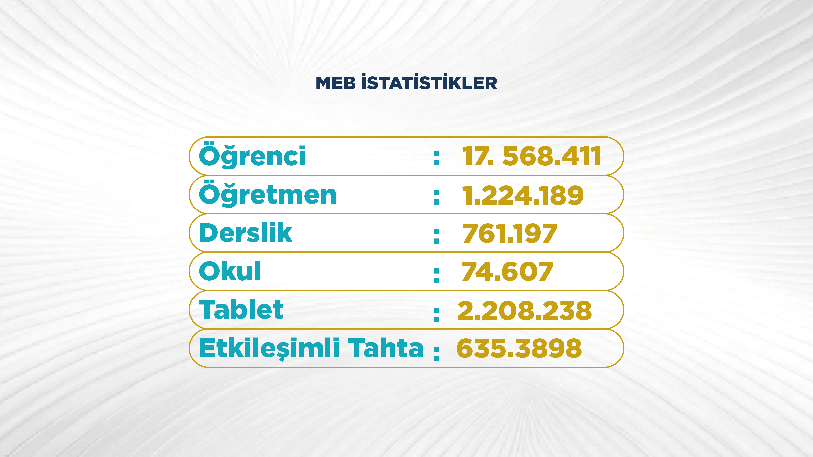
Aslında Türkiye bu dönüşüme hazırlıksız değil. EBA ve MEBİ gibi platformlarla çok güçlü bir dijital içerik ve erişim altyapısı oluşturarak bu alanda öncü bir konuma ulaştık. Özellikle yeni nesil platformumuz MEBİ; bünyesindeki yapay zekâ desteği sayesinde her öğrencimizin öğrenme hızını ve eksiklerini analiz edip onlara tamamen kişiselleştirilmiş bir çalışma planı sunmaktadır. MEBİ'nin sunduğu bu uyarlanabilir öğrenme yapısı; yapay zekânın sadece bir içerik sağlayıcı değil, öğrencinin başarısını artıran akıllı bir rehber olarak kullanılmasının en somut örneğidir. EBA ise devasa içerik havuzuyla bu ekosistemin veri ve kaynak merkezini oluşturmaya devam etmektedir.
Bugün:
tek bir dijital ekosistem içinde gerçekleşiyor. Bu çok önemli bir avantaj. Ama burada kritik bir kırılma noktası var:
Yani artık sorumuz şu:
İşte bu noktada artık teknik değil etik ve yönetişim temelli bir yaklaşıma ihtiyaç duyuyoruz.
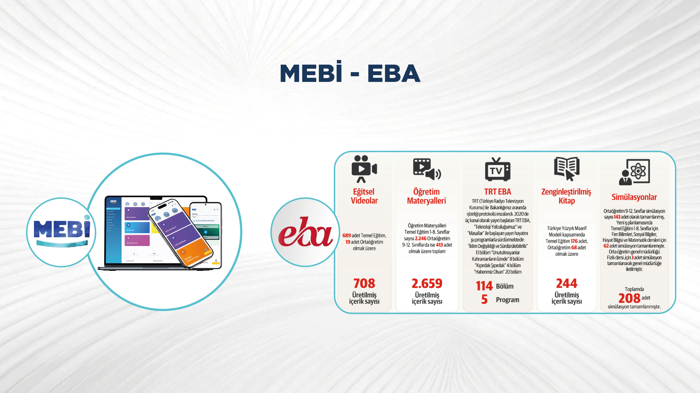
Türkiye Yüzyılı Maarif Modeli bu noktada bize çok güçlü bir referans sunuyor. Değerli misafirler, Millî Eğitim Bakanlığı olarak, geleceğin eğitim vizyonunu şekillendiren Türkiye Yüzyılı Maarif Modeli'ni hayata geçirdik. Bu modelin temelinde, sadece bilgiyle donanmış değil, aynı zamanda yetkin ve erdemli insan yetiştirme hedefi yatmaktadır.
Bu model ile; ahlaklı, bilge, cesaretli, estetik, iradeli, merhametli, sağlıklı, sorgulayıcı, üretken ve vatansever bireyler yetiştirmeyi hedefliyoruz. Bu özellikler, gençlerimizin hem akademik başarılarını destekleyecek hem de onları topluma faydalı, duyarlı ve sorumluluk sahibi vatandaşlar olarak yetiştirecektir.
Tüm bu teknolojik imkânlar, "Türkiye Yüzyılı Maarif Modeli" ile tanımladığımız "Yetkin ve Erdemli İnsan" profilini desteklemektedir. Bilgiye ulaşan ve ulaştığı bilgiyi ahlaki değerlerle harmanlayıp insanlığın ortak faydasına sunan bireyler yetiştirmek temel gayemizdir.
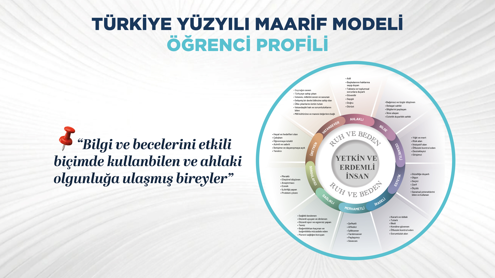
Yeni modelimizde "Bütüncül Eğitim" yaklaşımı temel esastır. Öğrenme çıktıları çerçevemizden farklılaştırılmış öğretime kadar her bileşen, disiplinler arası bir mantıkla yapılandırılmıştır. Bu sistemde teknoloji, sadece bağımsız bir konu başlığı değil; tüm öğretim süreçlerine içselleştirilmiş bir okuryazarlık becerisi olarak yer almaktadır.
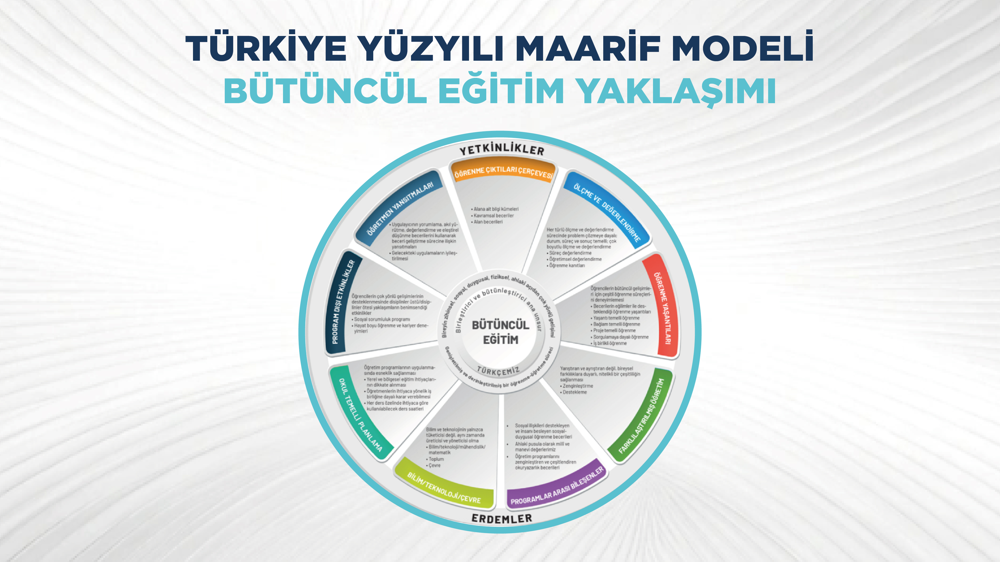
Türkiye Yüzyılı Maarif Modeli'nde öğrenme sürecini, bilgiyi eyleme dönüştüren "Alan Becerileri" çerçevesinde kurguladık. Bu yapı; Türkçe, Matematik, Fen Bilimleri ve Sosyal Bilimler gibi temel disiplinlerin her birinde, öğrencinin derinlemesine uzmanlaşmasını sağlayan özgün beceri setlerini içermektedir. Beceriyi merkeze alan bu yaklaşım sayesinde öğrencilerimiz, teorik bilgiyi hayatın içinde işlevsel kılarak kalıcı öğrenmeye ulaşmaktadır. Bu kapsamlı beceri mimarisi içerisinde Bilişim Teknolojileri ve Yazılım alan becerileri, dijital çağın gerektirdiği yetkinlikleri sistematik bir şekilde sunan stratejik bir alandır.
Bilişim teknolojilerini artık sadece araç kullanımı düzeyinde değil, daha kapsamlı beceriler üzerinden ele alıyoruz. Bilişim Teknolojileri ve Yazılım alan becerileri kapsamında;
gibi kritik yetkinlikleri tanımladık. Amacımız, öğrencilerin teknolojiyi sadece tüketen değil; sistem tasarlayan, veriyi analiz eden ve dijital dünyada güvenliğini sağlayabilen bireyler olmalarına katkı sağlamaktır.
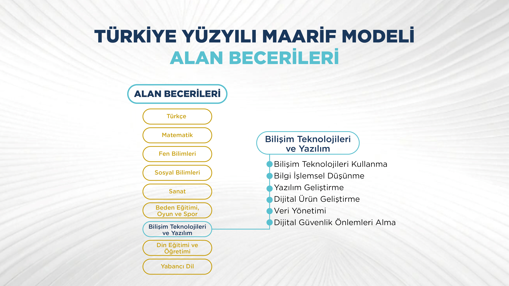
Türkiye Yüzyılı Maarif Modeli'nde yer alan okuryazarlık becerileri, süreç bileşenleri itibarıyla üç temel düzeyde öğrencilerimize kazandırılmak üzere kurgulanmıştır:
Gelişime uygun ve sarmal bir yapıda yapılandırılan bu süreç, farkındalıkla başlayıp eylemsellik ile tamamlanan bir olgunlaşma yolculuğudur. Bununla birlikte eğitim süreçlerimizde sarmal yapının bir gereği olarak; bazı durumlarda işlevsellik aşamasında derinleşen süreç, doğrudan eyleme geçmek yerine daha geniş kapsamlı bir farkındalığa dönüşerek devam edebilmektedir. Bu yaklaşım, pasif bir kullanımın ötesinde aktif ve sorumlu bir dijital vatandaşlık yapısını temsil etmektedir.
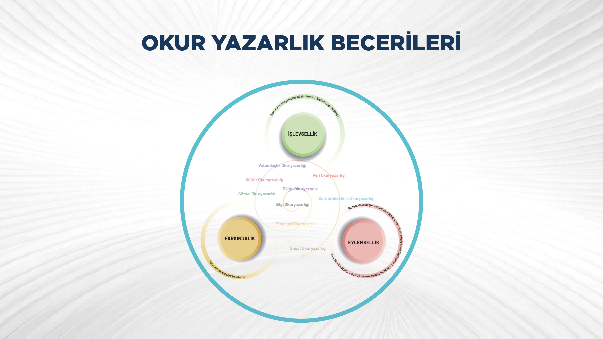
Türkiye Yüzyılı Maarif Modeli'nde yer alan dokuz okuryazarlık türünden biri olan dijital okuryazarlığı dokuz temel başlıkta detaylandırdık. Fikri mülkiyet haklarından siber güvenliğe, içerik üretiminden eleştirel düşünmeye kadar her alan, yapay zekâ çağının gerekliliklerine uygun olarak tasarlandı.
Dijital okuryazarlık artık temel bir yaşam becerisi. Öğrencinin dijital ortamda bilgiye ulaşması, iletişim kurması, içerik üretmesi ve bunu etik şekilde yapması gerekiyor. Dijital beceri ile dijital bilinç aynı şey değildir. Bizim hedefimiz sadece beceri değil, bilinç kazandırmak.
Türkiye Yüzyılı Maarif Modeli kapsamında yapay zekâ ve dijital okuryazarlık, öğretim programlarımızda iki temel şekilde yer almaktadır:
Birincisi, doğrudan teknoloji odaklı dersler: Bilişim Teknolojileri ve Yazılım dersi başta olmak üzere, Robotik Kodlama, Yapay Zekâ Uygulamaları ve mesleki eğitimdeki Yapay Zekâ alanı öğrencilerimize temel ve ileri düzey teknik beceriler kazandırmaktadır.
İkincisi, farklı derslere entegrasyon: Sosyal bilgilerde dijitalleşmenin toplumsal etkileri, kimyada sürdürülebilirlik bağlamı, tarihte ise araştırma süreçleri içinde ele alınmaktadır.
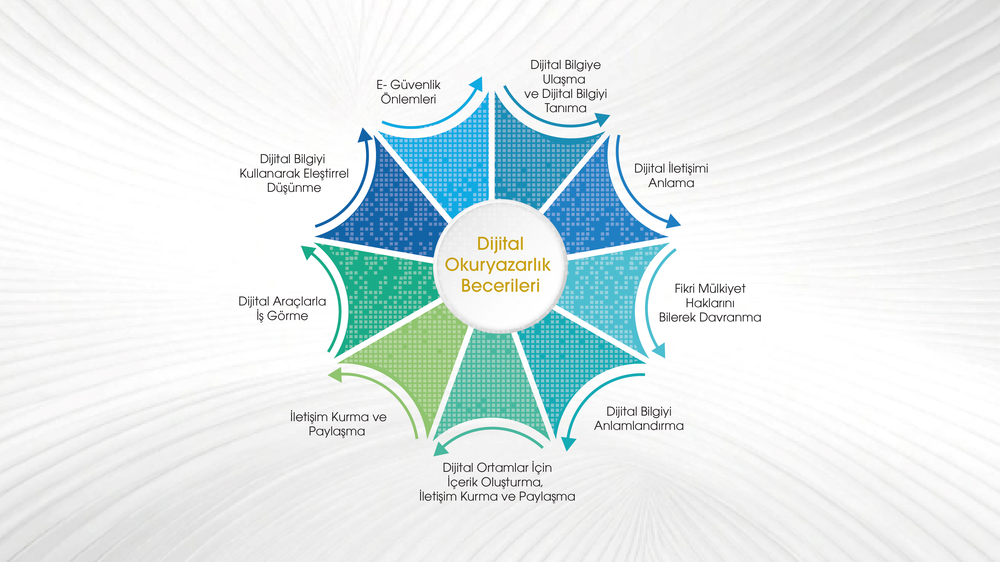
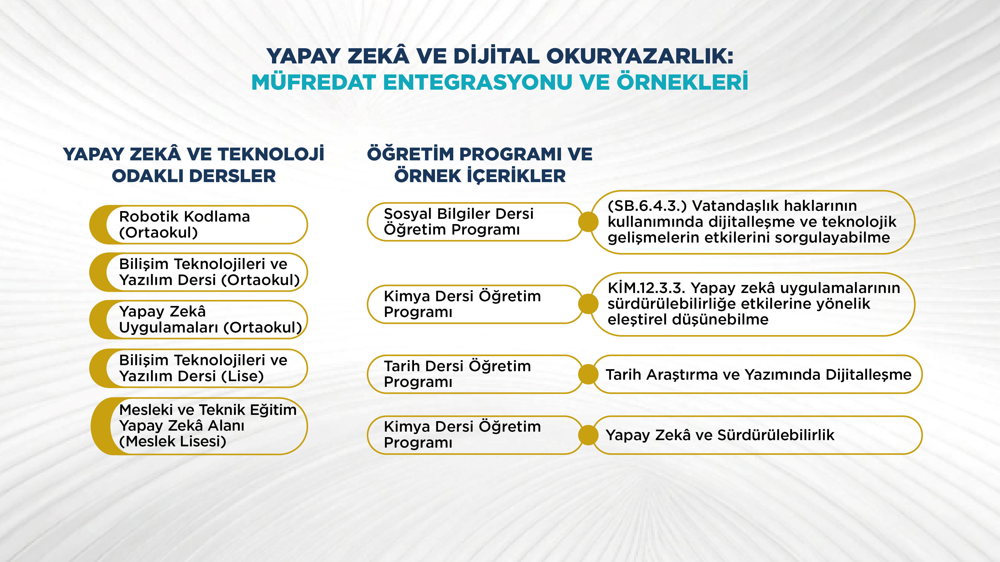
Değerli katılımcılar, biz sadece kendi içimize bakmıyoruz; dünyada nerede olduğumuzu ve nereye gittiğimizi de düzenli olarak takip ediyoruz. Bu kapsamda yeni müfredatımızı, dünya standartları kabul edilen PISA yeterlik düzeyleri ve TIMMS bilişsel alanlarıyla yan yana getirdik.
İzleme ve Değerlendirme Daire Başkanlığımızın somut verilerine göre; Maarif Modelimizdeki beceriler, PISA'nın en üst düzey beklentileriyle tam bir uyum içinde. Örneğin:
Bu şu anlama geliyor: Modelimiz kâğıt üzerinde kalmıyor; çocuklarımızı eleştirel düşünme, problem çözme ve analitik beceriler gibi üst düzey yetkinliklerde dünya sahnesine hazırlıyor. Müfredatımız kademeli olarak hayata geçtikçe, PISA gibi uluslararası testlerdeki okuryazarlık düzeylerimizin de kalıcı olarak iyileşeceğini öngörüyoruz. Yani biz sadece yerel bir model değil, küresel rekabete hazır bir nesil inşa ediyoruz.
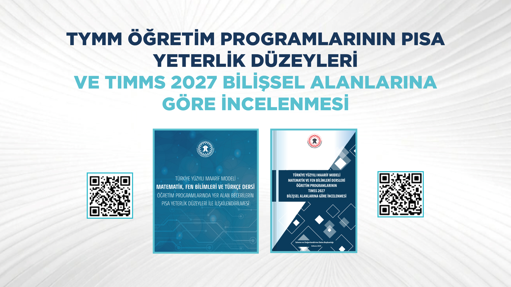
Türkiye Yüzyılı Maarif Modeli kapsamında okul öncesi eğitim programı ile 25 dersimize ait öğretim programlarımızı, Avrupa Konseyi'nin "Dijital Vatandaşlık Eğitimi Planlayıcısı" çerçevesinde sistematik olarak inceledik.
Şunu net bir şekilde söyleyebilirim: Bu çalışma, uluslararası literatürde bu ölçekte yapılan İLK çalışmadır. Avrupa Konseyi üye ülkelere bu planlayıcıyı kullanmalarını tavsiye ediyordu ancak bugüne kadar hiçbir ülke bizim yaptığımız gibi bütüncül ve karşılaştırmalı bir program analizi yayımlamamıştı. Çalışmamızın İngilizce çevirisi bizzat Avrupa Konseyi tarafından üstlenildi ve tüm üye ülkelerle paylaşıldı.
Bulgularımız, Maarif Modeli'nin dijital vatandaşlığın özellikle "öğrenme ve yaratıcılık" ile "medya okuryazarlığı" boyutlarında oldukça güçlü olduğunu göstermektedir. Buna karşılık, hukuk, güvenlik ve etik gibi bazı boyutların daha sınırlı; dijital sağlık ve dijital tüketicilikle ilişkili çıktılarının ise görece daha az yer aldığı görülmektedir.
Alan yazını açısından son derece değerli olduğuna inandığımız bu çalışma, ortaya koyduğu somut önerilerle Bakanlığımızın program geliştirme çalışmalarına ışık tutacak ve politika süreçlerine de katkı sağlayacaktır.
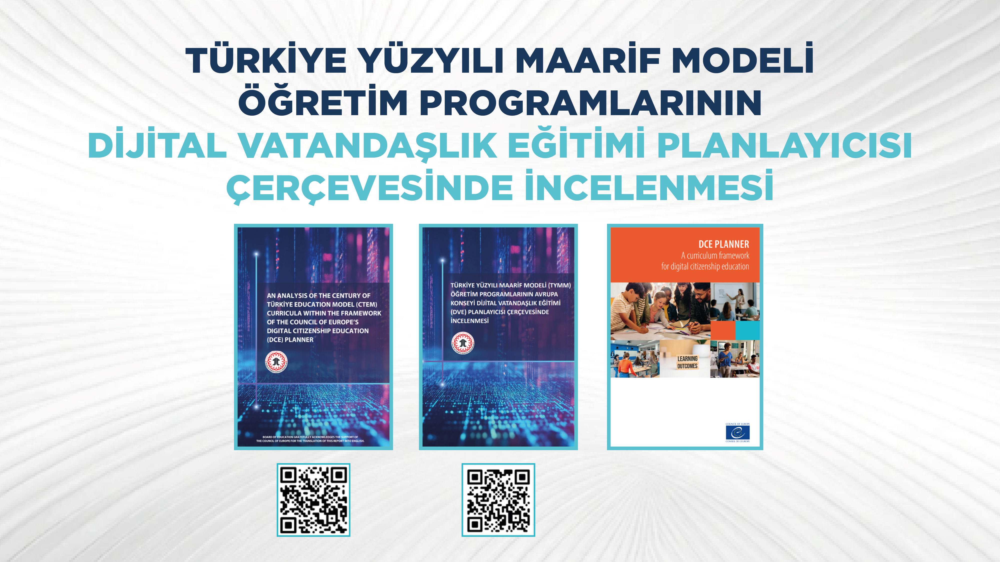
Aynı şekilde küresel düzeydeki stratejik raporları da yakından takip ediyoruz. OECD'nin dijital eğitim vizyonu, üretken yapay zekânın eğitimdeki etkin kullanımını odak noktasına almaktadır. Biz de stratejilerimizi bu projeksiyonlar doğrultusunda güncelleyerek eğitim sistemimizi gelecek on yılların ihtiyaçlarına hazırlıyoruz.
OECD Dijital Eğitim Görünümü 2026 Raporu, Türkiye açısından dikkat çekici bulgular ortaya koymaktadır. Rapora göre ülkemizde öğrenciler yapay zekâyı en çok bilgi edinmek, açıklayıcı içeriklere ulaşmak ve kavramları anlamlandırmak için kullanmaktadır. Aynı raporda Türkiye'de yürütülen saha çalışması ise, yapay zekâ destekli öğrenmenin özellikle doğru pedagojik tasarımla sunulduğunda öğrenci performansını anlamlı biçimde artırabildiğini ortaya koymaktadır.
Öğretmenler boyutunda ise OECD, yapay zekânın öğretmenin yerini alan değil, öğretmenin kapasitesini güçlendiren bir araç olarak ele alınması gerektiğini vurgulamaktadır.
Daha da önemlisi, Türkiye OECD raporunda, üretken yapay zekâyı eğitim alanındaki resmî stratejilerine dâhil eden sınırlı sayıdaki ülkeler arasında gösterilmektedir. Bu yönüyle Türkiye, eğitimde yapay zekâya ilişkin yalnızca uyum sağlayan değil, örnek oluşturan ülkelerden biri hâline gelmiştir.
OECD'nin PISA 2029 kapsamında ilk kez "Medya ve Yapay Zekâ Okuryazarlığı"nı ayrı bir değerlendirme alanı olarak tanımlaması son derece anlamlıdır. Bu da bize açıkça göstermektedir ki yapay zekâ okuryazarlığı eğitim sistemlerinin bugün ciddiyetle ele alması gereken temel bir yetkinlik alanıdır.
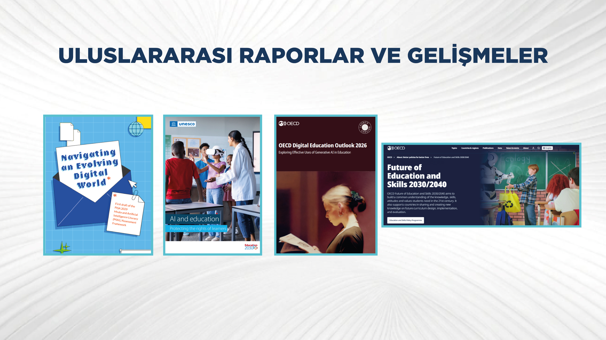
Dünya Ekonomik Forumu tarafından yayımlanan "Skills on the Rise 2025-2030" raporu; geleceğin iş dünyasında yapay zekâ ve büyük veri odaklı yetkinliklere duyulan ihtiyacın %88 oranında artacağını öngörerek eğitim sistemleri için hayati bir sorumluluk tanımlamaktadır.
Raporda yükselen beceriler olarak tanımlanan düşünme, bilişsel esneklik, öz disiplin ve teknolojik okuryazarlık gibi alanlar; Türkiye Yüzyılı Maarif Modeli'nde (TYMM) kurguladığımız "Yetkin ve Erdemli İnsan" profilinin yapı taşlarıyla tam bir uyum içindedir.
Bizler TYMM ile öğrencilerimizi teknik birer kullanıcı olarak değil; bu teknolojileri "bilge" ve "üretken" bir kimlikle yönetebilen, etik sorumluluklarını teknik donanımıyla harmanlayan şahsiyetler olarak yetiştiriyoruz. Dolayısıyla küresel raporların "geleceğin zorunlu becerileri" olarak sunduğu bu yetkinlik setini; bizler müfredatımızın kalbine yerleştirerek gençlerimizi 2030'lu yılların dünyasına hazırlamış durumdayız.
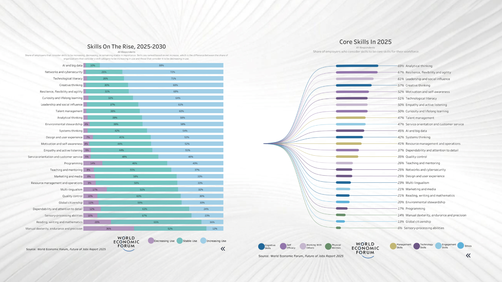
Yapay zekâ teknolojileri eğitimde önemli avantajlar sunarken bazı riskleri de beraberinde getirmektedir. Kişiselleştirilmiş öğrenme süreçleri ne kadar faydalıysa; algoritmik yanlılık ve veri güvenliği gibi hususlar da o derece dikkatle yönetilmesi gereken alanlardır. Temel görevimiz, bu teknolojilerin sorumlu ve güvenli bir şekilde kullanımını sağlamaktır.
Fırsatlar:
Tehditler:
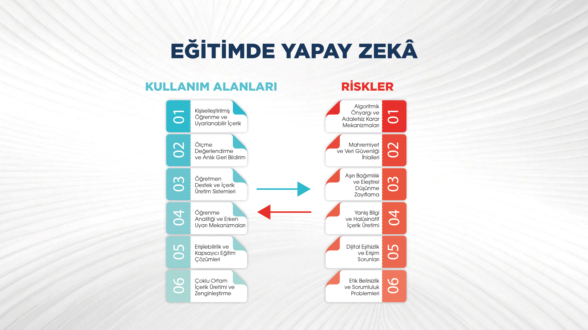
Gelişen teknoloji karşısında sormamız gereken temel soru insan odaklılıktır. Harvard Üniversitesi'nden bir grup araştırmacının yayımladıkları "Which Humans?" başlıklı çalışma, yapay zekâ modellerinin veri setlerindeki kültürel yanlılığa dikkat çekmektedir.
Mevcut geniş dil modellerinin büyük oranda "WEIRD" olarak tanımlanan; Batılı (Western), eğitimli (Educated), sanayileşmiş (Industrialized), zengin (Rich) ve demokratik (Democratic) toplumların kültürel kodlarını yansıttığını görüyoruz. Bu durum, yerel değerlerin ve farklı kültürel perspektiflerin algoritmik bir tek tipleşmeye maruz kalması riskini doğurmaktadır.
Bu nedenle yapay zekâ uygulamalarının kültürel etkilerini analiz ederken insanı kendi medeniyet değerleriyle "özne" tutmak zorundayız. Yapay zekâ, insanın zihinsel kapasitesini ikame eden değil, bu kapasiteyi kültürel çeşitliliği gözeterek daha nitelikli hale getiren yardımcı bir mekanizma olarak konumlandırılmalıdır.
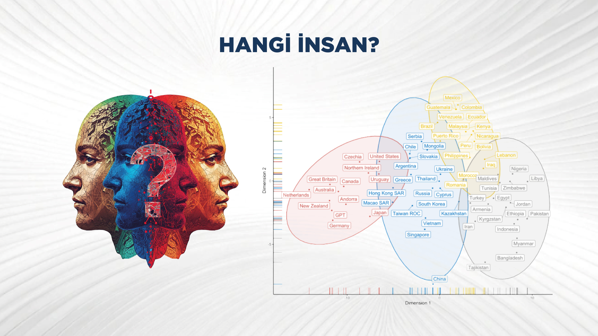
İşte tam bu noktada biz YAZEK'i devreye aldık. Cumhurbaşkanımızın vizyonu ve 11. Kalkınma Planı doğrultusunda yürürlüğe konulan Ulusal Yapay Zekâ Stratejisi çerçevesinde hazırlanan "Eğitimde Yapay Zekâ Politika Belgesi ve Eylem Planı (2025-2029)", Bakanlığımızın dijital dönüşüm ve yapay zekâ ekosistemine yönelik en kapsamlı yol haritalarından biri olarak 17 Haziran 2025 tarihinden itibaren uygulamaya alınmıştır.
İlgili belgemiz; yönetimden okul süreçlerine, öğretmen eğitiminden öğrenci kazanımlarına kadar uzanan geniş bir kapsamda 4 hedef, 15 politika ve 40 eylem adımı içermektedir.
YAZEK sistemini eğitim ve öğretim kurumlarımızda gerçekleştirilen uygulamaların etik ilkelere uygunluğunu beyan etmek ve olası ihlal süreçlerini yönetmek amacıyla oluşturulmuş bir yönetişim altyapısı olarak konumlandırıyoruz. 2 Şubat 2026 itibarıyla devreye aldığımız bu platform aracılığıyla; öğretmenlerimizin ve geliştiricilerimizin riskleri önceden öngörerek sorumlu kullanım konusunda bilinçli kararlar almalarına rehberlik ediyoruz.
Buradaki ana motivasyonumuz son derece nettir: Yapay zekâ eğitimde hızla yaygınlaşırken biz de "önce etik ve hesap verebilirlik", "sonra ölçekleme" yaklaşımıyla sahada izlenebilir bir güven zemini inşa ediyoruz.
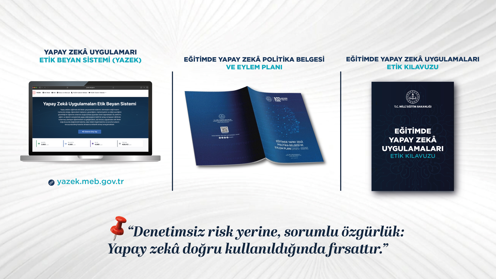
YAZEK sistemimizi sekiz temel etik ilke üzerine inşa ettik. Hiçbir yapay zekâ uygulaması, öğrencinin verisini ve güvenliğini koruma altına almadan eğitim süreçlerine dahil edilemez.
YAZEK'te biz şunu söylüyoruz: Yapay zekâ uygulaması varsa, etik çerçeve zorunludur. Yani; teknoloji insanın önüne geçmez, öğrenci her zaman merkezdedir, yapay zekâ bir amaç değil araçtır.
Sekiz Temel Etik İlke:
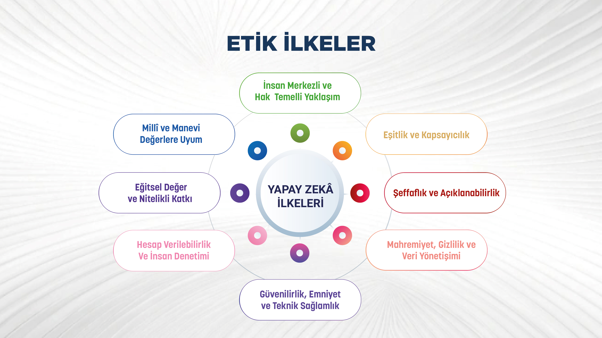
Biz bu sistemi "çok katmanlı bir yönetişim modeli" üzerine inşa ettik. Değerlendirme ve rehberlik tek bir merkezden değil, bizzat uygulamanın yapıldığı okuldan başlıyor ve merkeze doğru dört ana halkadan oluşuyor:
1. Halka — Okul Yapay Zekâ Etiği Ekipleri: Her okulumuzda müdür başkanlığında; müdür yardımcısı, varsa bilişim teknolojileri ve rehber öğretmenlerimizden oluşan bu ekipler, sahadaki ilk rehberlik ve denetim noktasıdır. Uygulamaları yerinde görür ve olası risklere anında müdahale ederler.
2. ve 3. Halkalar — İl ve İlçe Yapay Zekâ Uygulamaları Etik Kurulları: Bu kurullarımız, gelen itirazları değerlendirmenin yanı sıra bölge düzeyinde öğretmenlerimize rehberlik ederek etik farkındalık eğitimleri düzenlerler. Süreçlerin yerel düzeyde standartlara uygun ilerlemesini sağlarlar.
4. Halka — Yapay Zekâ Uygulamaları Etik Üst Kurulu: En tepede yer alan bu kurul; Bakanlığımızın hukuktan stratejiye kadar farklı birimlerinin yanı sıra sivil toplum ve akademi temsilcilerini de barındıran çok geniş bir yapıya sahip. Biz burada sadece nihai kararları vermiyoruz, aynı zamanda ülkemizin eğitimde yapay zekâ politikalarını ve etik standartlarını belirliyoruz.
Yani okuldan merkeze uzanan, her halkası birbirine bağlı, yaşayan ve izlenebilir bir denetim ve rehberlik ağı kurduk.
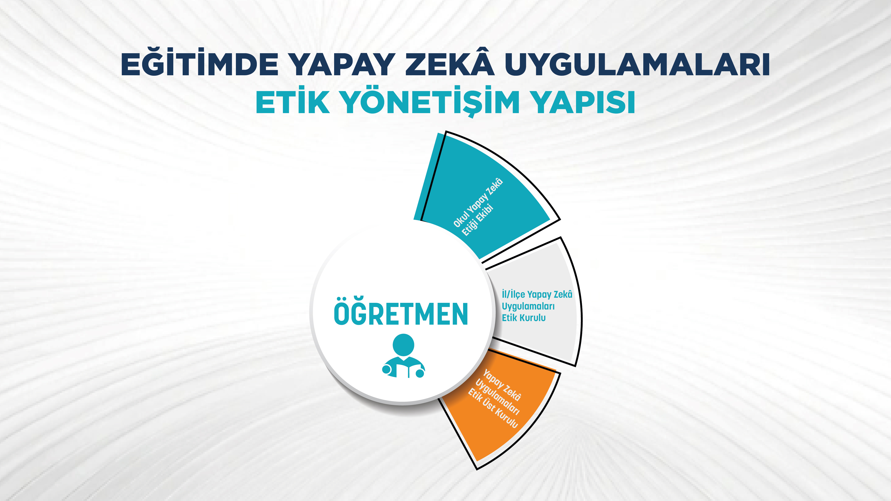
Bu süreçte bize en çok yöneltilen sorulardan biri, hangi durumlarda etik beyanın gerekli olduğudur. Eğer;
etik beyan zorunludur. Buna karşılık, öğretmenlerimizin yalnızca ders hazırlığı sürecinde ya da kendi bireysel mesleki gelişimleri kapsamında gerçekleştirdikleri kullanımlar bu zorunluluğun dışında kalmaktadır.
Yeni bir beyan ancak dört temel unsurdan biri değiştiğinde gereklidir:
Buradaki amacımız yeni bir bürokratik yük oluşturmak değil; etik farkındalığı güçlendirmek ve güvenli bir kullanım kültürü oluşturmaktır.
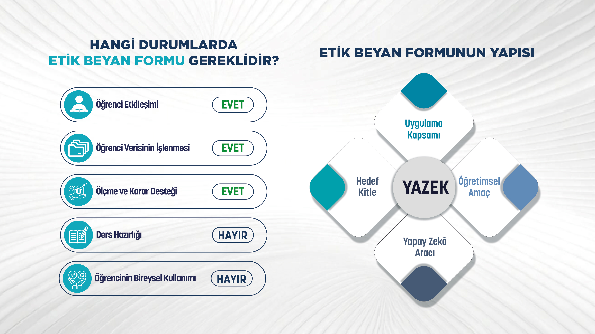
Olası bir ihlal durumunda paydaşlarımızın haklarını koruyan, izlenebilir bir iş akışımız bulunmaktadır. Eğer bir öğrenci, veli veya okul personeli; okulda yürütülen yapay zekâ uygulamasında bir etik ihlal (örneğin KVKK aykırılığı, mahremiyet ihlali veya pedagojik olmayan bir yönlendirme) tespit ederse, durumu bir dilekçe ile okul müdürlüğüne bildiriyor.
Süreç şöyle ilerliyor:
Bu mekanizma cezalandırıcı bir refleks değil, "önleyici bir güvence"dir. Amacımız sahadaki sorumlu kullanım kültürünü yerleşik hale getirmektir.
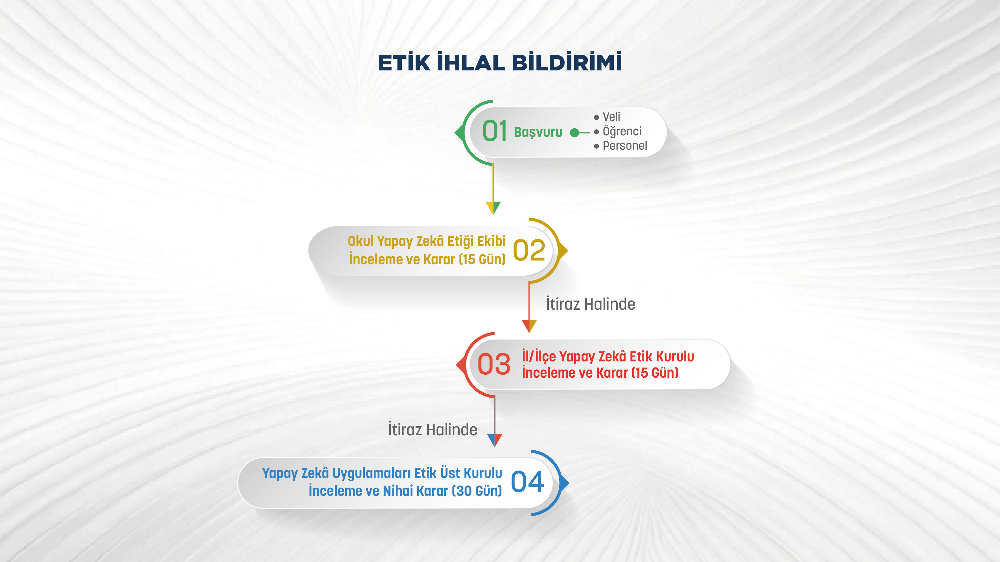
Sistemin ilk ayına ilişkin veriler, sahadaki aktif kullanımı göstermektedir. 81 ilde ve 331 ilçede kurullarımız teşkil edildi ve 37.361 okulumuzda ekiplerimiz oluşturuldu. Platforma yapılan 516.719 giriş ve doldurulan 3.263 etik beyan formu, öğretmenlerimizin bu süreci benimsediğinin bir göstergesidir.
En Çok Etik Beyan Başvurusu Yapılan Dersler:
Sınıf Düzeyine Göre Başvurular:
Yapay Zekâ Uygulamalarının Kapsamı:
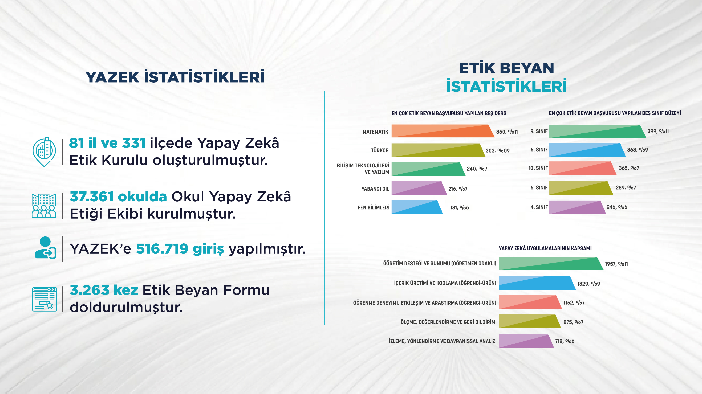
Bence bu çağda eğitimin temel pusulası çok nettir: teknoloji değil, insan ve değerlerdir. Yapay zekâ son derece güçlü bir araçtır; ancak yönünü belirleyen şey, onu hangi eğitim anlayışıyla ve hangi değer zeminiyle kullandığımızdır. Eğer bu zemini doğru kuramazsak teknoloji büyük fırsatlar kadar ciddi riskler de üretebilir. Bu nedenle biz, yapay zekâ çağında eğitimi sadece teknik yeterlikler üzerinden değil; ahlaki olgunluk, sorumluluk ve insan merkezli yaklaşım üzerinden ele alıyoruz.
Türkiye Yüzyılı Maarif Modeli tam da bu noktada güçlü bir yön çiziyor. Modelin nihai amacı, bilgi, beceri, eğilim ve değerlere sahip “yetkin ve erdemli insan” yetiştirmektir. Yani bizim hedefimiz yalnızca bilgiye ulaşan bireyler değil; bilgisini doğru kullanan, sorgulayan, üreten, ahlaki sorumluluk taşıyan ve insanlığın ortak faydasını gözeten bireylerdir. Bu yönüyle model, yapay zekâ çağında öğrenciyi sadece dijital becerilerle değil, aynı zamanda karakter ve değerlerle de güçlendiren bütüncül bir çerçeve sunmaktadır.
Türkiye Yüzyılı Maarif Modeli’nde yapay zekâ ve dijital okuryazarlık iki düzlemde ele alınıyor. Birincisi, doğrudan teknoloji odaklı dersler ve alan becerileri üzerinden; ikincisi ise farklı disiplinlerin içine entegre edilen okuryazarlık becerileri üzerinden. Bilişim Teknolojileri ve Yazılım alan becerileri ile dijital okuryazarlık becerileri, öğrencilerin sadece araç kullanmasını değil; dijital bilgiye ulaşmasını, onu eleştirel biçimde değerlendirmesini, etik kurallara uygun içerik üretmesini ve dijital güvenlik önlemleri almasını hedefliyor.
Avrupa Konseyi’nin Dijital Vatandaşlık Eğitimi Planlayıcısı çerçevesinde yaptığımız analizde ise çok önemli bir sonuç ortaya çıktı. Bulgular, öğretim programlarımızın özellikle “öğrenme ve yaratıcılık” ile “medya okuryazarlığı” boyutlarında oldukça güçlü olduğunu gösterdi. Ayrıca mevcut programlarımızın, PISA 2029’da ilk kez ayrı bir değerlendirme alanı olarak ele alınacak “Medya ve Yapay Zekâ Okuryazarlığı” ile de dikkat çekici bir uyum içinde olduğunu gördük. Bu da eğitim sistemimizin yalnızca bugünün değil, geleceğin yetkinlik alanlarına göre kurgulandığını ortaya koymaktadır.
YAZEK, Millî Eğitim Bakanlığına bağlı kurumlarda yürütülen yapay zekâ uygulamalarının etik ilkelere uygunluğunu beyan etmek, izlemek ve olası etik ihlal süreçlerini yönetmek amacıyla oluşturduğumuz bir yönetişim altyapısıdır. Biz YAZEK’i yalnızca teknik bir platform olarak değil, eğitimde yapay zekâ kullanımını şeffaf, hesap verebilir ve güvenli hale getiren kurumsal bir çerçeve olarak konumlandırıyoruz. Temel amacımız, öğretmenlerimizin ve kurumlarımızın yapay zekâ uygulamalarını bilinçli, sorumlu ve etik ilkelere uygun şekilde kullanmasını sağlamak ve bu alanda ortak bir güven kültürü oluşturmaktır.
Bu sistemin arkasında güçlü bir politika ve vizyon çerçevesi bulunmaktadır. Cumhurbaşkanlığımızın ortaya koyduğu dijital dönüşüm vizyonu ve bu doğrultuda hazırlanan Ulusal Yapay Zekâ Stratejisi, kamu kurumlarında yapay zekânın güvenli ve etik kullanımını temel bir öncelik olarak tanımlamaktadır. Bu stratejiye paralel olarak hazırlanan “Eğitimde Yapay Zekâ Politika Belgesi ve Eylem Planı (2025–2029)”, eğitim sisteminde yapay zekâ kullanımına ilişkin kapsamlı bir yol haritası sunmaktadır. YAZEK de bu politika çerçevesinin sahadaki somut uygulama ayağını oluşturmaktadır.
Bizi bu sistemi kurmaya iten temel motivasyon ise oldukça açıktı: Yapay zekâ eğitimde hızla yaygınlaşıyor ve artık sadece içerik üretimiyle sınırlı kalmıyor; öğrenci verisine, ölçme-değerlendirme süreçlerine ve karar mekanizmalarına doğrudan etki ediyor. Bu kadar geniş bir etki alanına sahip bir teknolojiyi rehbersiz bırakmak mümkün değildi. Bu nedenle biz “önce etik ve hesap verebilirlik, sonra ölçekleme” yaklaşımıyla hareket ederek YAZEK’i hayata geçirdik ve eğitimde yapay zekâ kullanımına güvenli bir zemin kazandırmayı hedefledik.
YAZEK’te yaklaşımımız araç bazlı yasaklama değildir; kullanımın niteliğine odaklanan bir etik çerçevedir. Yani bir yapay zekâ aracının adı değil, nasıl kullanıldığı önemlidir. Eğer kullanım insan merkezli, şeffaf ve güvenli ise bu sistem içinde yer alabilir. Bu nedenle sistem esnek ve kapsayıcı bir yapı sunar.
Okul Yapay Zekâ Etiği ekipleri sistemin başından itibaren kurulmalıdır. Etik beyan ise uygulama başlamadan önce yapılmalıdır; çünkü sistemin mantığı önleyicidir. Ancak bu süreç öğretmeni bekleten bir onay mekanizması değildir; beyan yapılır ve uygulama başlatılır.
YAZEK kesinlikle bürokratik bir yük değildir. Aksine öğretmeni koruyan ve rehberlik eden bir yapıdır. Aynı şekilde sistem cezalandırıcı değil, önleyici bir yaklaşıma sahiptir. Amaç öğretmeni sınırlamak değil, güvenli ve sorumlu kullanım kültürü oluşturmaktır.
Bir etik ihlal iddiası ortaya çıktığında süreç başvuru ile başlar ve sistem üzerinden kayıt altına alınır. Öğrenci, veli veya okul personeli başvuruda bulunabilir. İlk değerlendirme okul düzeyinde yapılır ve gerekli incelemeler gerçekleştirilir.
Eğer ihlal tespit edilirse uygulama durdurulabilir ve süreç üst kurullara taşınabilir. İlçe, il ve üst kurul seviyesinde çok katmanlı bir değerlendirme mekanizması bulunmaktadır. Bu yapı hem yerel hem merkezi dengeyi sağlar.
Burada amaç cezalandırmak değil, güvenli kullanım kültürü oluşturmaktır. Vatandaşlar da bu sistemin yalnızca izleyicisi değil, aktif paydaşıdır.
YAZEK’in ilk verileri sistemin sahada güçlü bir şekilde benimsendiğini göstermektedir. Türkiye genelinde çok sayıda okulda ekipler kurulmuş ve öğretmenler sistemi aktif olarak kullanmaya başlamıştır. Bu durum yapay zekâ kullanımının artık sahada gerçek bir karşılığı olduğunu ortaya koymaktadır.
Başvuruların özellikle temel derslerde yoğunlaşması, yapay zekânın öğretim süreçlerinin doğal bir parçası haline geldiğini göstermektedir. Ayrıca kullanım alanlarının öğretim desteği, içerik üretimi ve ölçme-değerlendirme gibi alanlarda yoğunlaşması dikkat çekicidir.
Bu veriler bize şunu söylüyor: Yapay zekâ artık eğitimde marjinal bir araç değil, sistemin merkezine yerleşen bir dönüşüm unsurudur ve bu dönüşüm kontrollü şekilde ilerlemektedir.